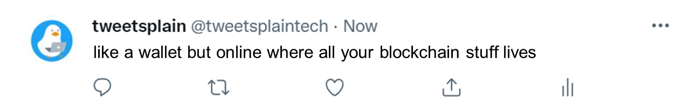

web3

Phase 1 of the internet (Web1) was just static, readable websites. Phase 2 (Web2) is what dominates the internet today, you both read and write on websites (think social media). Phase 3 (Web3) is reading and writing- but also enables true digital ownership through the blockchain.
blockchain

A blockchain is essentially a digital record of transactions that is duplicated and distributed across a bunch of computers. Each block in the chain contains a number of transactions, and every time a new transaction occurs on the blockchain, a record of that transaction is added to every participant’s record, known as a ledger.
cryptocurrency

Cryptocurrencies use blockchain technologies to trade their value, making them nearly impossible to counterfeit. Cryptocurrencies are self-run and tracked by decentralized blockchain ledgers. Bitcoin is the most well-known cryptocurrency.
smart contract

Smart contracts use blockchain to automatically enact a contract when the conditions are met. For example, you could write a smart contract that automatically sends cryptocurrency to a contractor’s account when they complete an agreed-upon work order, like making you a sandwich.
wallet
Just like you have a wallet that holds physical currency, there are digital wallets that hold cryptocurrency. Some common wallets are Coinbase and Electrum.
nft

NFTs use blockchain to prove ownership of a digital item, such as a piece of digital art. The image is still available to the public and searchable online. It’s similar to someone who buys a piece of art and stores it at a public museum with a plaque saying “On loan from the collection of ___.”
dao

Because blockchain can be secure, public and anonymous, it can be used to help groups of people make decisions without needing a governing body like an executive board or leadership team. DAOs (decentralized autonomous organizations) use blockchain and a set of encoded rules to make decisions together.